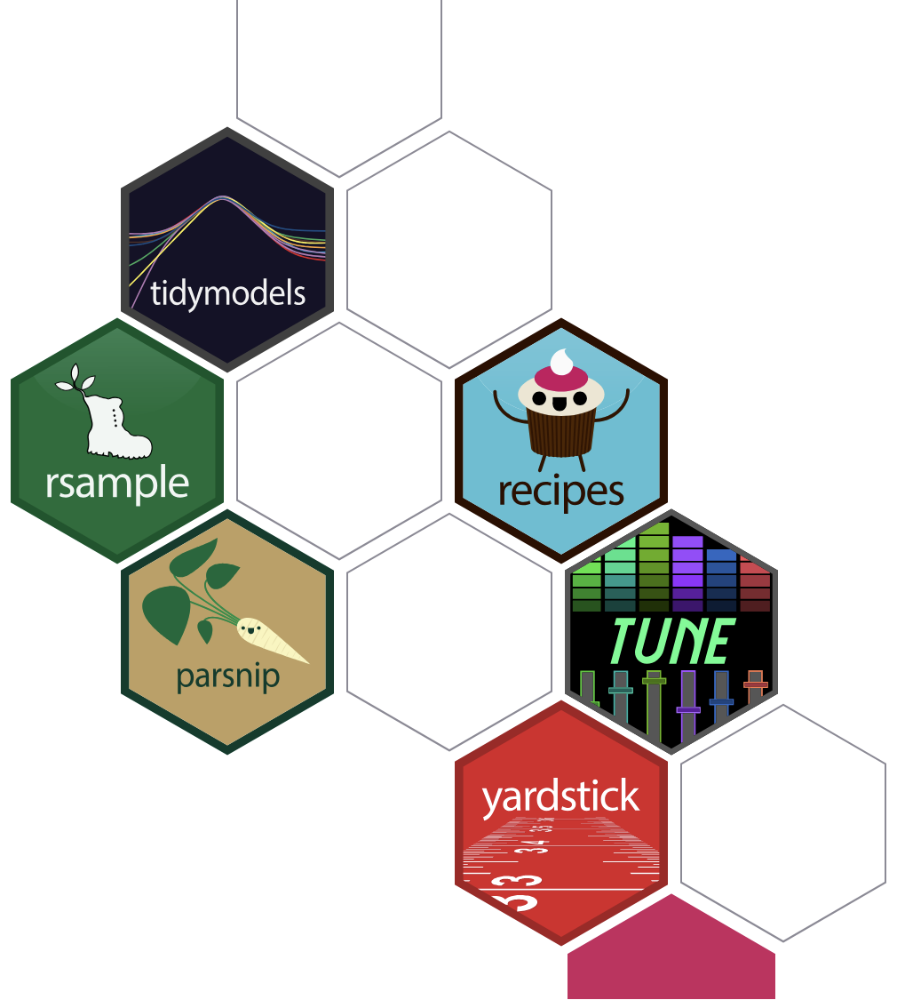
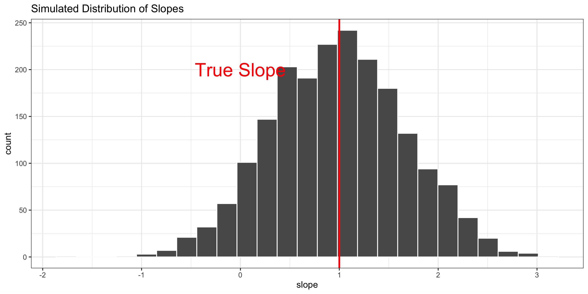
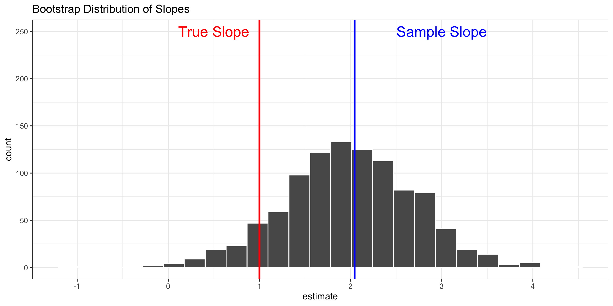

01:30

The Bootstrap
Grayson White
Stat 243
Week 5 | Fall 2026
Goals for today (and next time)
Today:
Discuss the bootstrap for conducting inference
Implement bootstrapping in R
Next time:
- Model and feature selection criteria
First: choosing folds
(Week 4, Wednesday slides)
The Bootstrap
Another resampling method
CV may remind you of another resampling: the Bootstrap!
There are differences in methodology and purpose:
CV: Model selection, model assessment, predictive accuracy
Bootstrap: Conducting inference within a given model
In short: The bootstrap is a super general tool for approximating sampling distributions.
Discussion: Sampling Distributions
Suppose we have the following linear regression model: \[ \hat{Y} = \hat{\beta}_0 + \hat{\beta}_1 X_1 + \hat \beta_2 X_2 + \hat \beta_3 X_1X_2 \] We would like to conduct inference (e.g., confidence intervals and hypothesis tests) on the parameter \(\beta_3\) using the statistic \(\hat\beta_3\)
The statistic \(\hat\beta_3\) has a sampling distribution. What is a sampling distribution, in your own words?
Why can’t we directly construct the sampling distribution for \(\hat\beta_3\)?
In regression, under what conditions can we still conduct theory-based (i.e., sampling distribution-based) inference?
Sampling and Bootstrap Distributions
Recall the Samping Distribution of a Statistic (\(\hat{\theta}\)), calculated from a Sample of size \(n\)
- Hypothetically, suppose we drew many random samples of size \(n\) from the population
- In each sample, we computed the statistic of interest, \(\hat{\theta}\)
- The distribution of those statistics is the sampling distribution
- Standard Error: the standard deviation of the sampling distribution
The Problem: We can’t draw multiple random samples of size \(n\)!
Under certain conditions, we can approximate sampling distributions using statistical theory.
Solution: the bootstrap!
The Bootstrap
The Bootstrap:
- We can always draw a bootstrap sample of size \(n\) by sampling with replacement from your original sample \(n\) times (i.e., equal to the original sample size)
Draw many bootstrap samples, and compute the statistic of interest in each
The distribution of those statistics makes up the Bootstrap Distribution
Bootstrap distributions can often well-approximate the variability of the sampling distribution.
Example
Let’s simulate a sample of data (\(n=100\)) from: \[Y = 1+ 2\cdot X_1 + 3\cdot X_2 + X_1 X_2 + \epsilon \ \ \ \text{where} \ \ \ \epsilon \sim N(0, \text{sd} = 0.5)\]
Model fit to the sample
Estimate Std. Error t value Pr(>|t|)
(Intercept) 1.447174 0.2100171 6.890742 5.807042e-10
X1 1.317290 0.3803365 3.463485 7.982768e-04
X2 2.405724 0.4102938 5.863417 6.404175e-08
X1:X2 2.044325 0.7415455 2.756844 6.985948e-03 X1:X2
2.044325 - Reminder: The true \(\beta_3 = 1\)
We will compare the Sampling Distribution and Bootstrap Distribution
Sampling Distribution
To construct the sampling distribution, I generate data from the true model many times. Each time, I fit a regression model to the data and save \(\hat\beta_3\).
NOTE: In the real world, we can’t do this because we never know the true model!
set.seed(234)
trials <- 2000 # Number of random samples
n <- 100 # Size of each random sample
X1 <- runif(n, 0, 1) # Generate X1 (the same for all sims)
X2 <- runif(n, 0, 1) # Generate X2 (the same for all sims)
slopes<-data.frame() #Create empty dataframe for the beta3's
for (i in 1:trials){
sim_e <- rnorm(n, 0 ,.5) # Simulate Error
sim_Y <- 1 + 2*X1 + 3*X2 + X1*X2 + sim_e # Simulate Y
sim_d <- data.frame(X1, X2, sim_Y) # Combine into dataframe
sim_mod <- lm(sim_Y ~ X1*X2, data = sim_d) # Run model
slopes <- rbind(
slopes,
data.frame(slope = sim_mod$coefficients["X1:X2"])
)
}Sampling Distribution

One Bootstrap Sample
We have 1 sample:
'data.frame': 100 obs. of 3 variables:
$ X1: num 0.19 0.911 0.228 0.825 0.916 ...
$ X2: num 0.106 0.675 0.175 0.736 0.843 ...
$ Y : num 1.28 4.69 2.46 5.72 6.85 ...But we can create a bootstrap sample:
How many observations from the original sample show up (at least once)?
Multiple Bootstrap Samples
Can use the rsample package from tidymodels to create bootstrap samples
The bootstraps function (much like the vfold_cv function) stores results as a resample object with 2 parts:
id, a vector with bootstrap sample identifiers (i.e “Bootstrap0001”, “Bootstrap0002”, … )
splits, anRlist that stores the indices of the original data for the bootstrap samples
Multiple Bootstrap Samples
Can look at the individual bootstrap samples by applying the analysis() function to items in the splits list:
X1 X2 Y
1 0.88512013 0.407644290 4.052791
2 0.59833927 0.702484856 5.302641
3 0.27990872 0.845346282 3.830628
4 0.93984799 0.289507665 4.734134
5 0.34358880 0.840053479 4.920790
6 0.54325101 0.495978532 4.517922
7 0.22771610 0.174886183 2.455955
8 0.46412395 0.273456314 3.202931
9 0.45118722 0.313890071 2.165816
10 0.59389733 0.320407999 3.331522
11 0.73316063 0.298647315 3.572715
12 0.13015300 0.339128896 1.868801
13 0.18625109 0.091891123 3.457439
14 0.97154221 0.325965931 5.347412
15 0.26658883 0.350407731 1.817146
16 0.02436059 0.051458522 1.760997
17 0.81674556 0.722222077 5.432965
18 0.91083934 0.674910891 4.690218
19 0.54684474 0.871165871 4.946789
20 0.72103207 0.927920684 6.917447
21 0.31964911 0.199632055 2.118912
22 0.72403696 0.897626241 6.573373
23 0.26658883 0.350407731 1.817146
24 0.21698990 0.071815337 1.109371
25 0.88512013 0.407644290 4.052791
26 0.31964911 0.199632055 2.118912
27 0.81674556 0.722222077 5.432965
28 0.87894886 0.341790504 3.555541
29 0.39186318 0.753764988 4.465656
30 0.91557599 0.843491077 6.849461
31 0.52137159 0.596618676 4.001052
32 0.17464680 0.268402249 3.128452
33 0.59957792 0.454056713 3.152022
34 0.74956111 0.139514707 3.296814
35 0.93984799 0.289507665 4.734134
36 0.05800229 0.127576120 1.876445
37 0.59456955 0.435076241 4.012104
38 0.59251664 0.227521617 2.533474
39 0.87271417 0.252757333 3.687996
40 0.72103207 0.927920684 6.917447
41 0.87271417 0.252757333 3.687996
42 0.90292012 0.125979959 2.701612
43 0.13015300 0.339128896 1.868801
44 0.97154221 0.325965931 5.347412
45 0.46412395 0.273456314 3.202931
46 0.43453875 0.318945832 2.782388
47 0.54684474 0.871165871 4.946789
48 0.86431590 0.221316292 3.362031
49 0.26658883 0.350407731 1.817146
50 0.82876677 0.530987489 5.216195
51 0.67282446 0.186985223 3.439139
52 0.82499048 0.736064946 5.719890
53 0.59833927 0.702484856 5.302641
54 0.08172276 0.754309770 4.012766
55 0.97636064 0.603364689 4.757226
56 0.43453875 0.318945832 2.782388
57 0.51591907 0.001195165 2.955306
58 0.91290422 0.549753173 4.894453
59 0.22611410 0.191534210 3.212331
60 0.87744851 0.399638482 4.747386
61 0.91290422 0.549753173 4.894453
62 0.66158306 0.816677128 5.639036
63 0.87894886 0.341790504 3.555541
64 0.09878428 0.256622953 1.940296
65 0.41807577 0.393861852 3.666252
66 0.46412395 0.273456314 3.202931
67 0.05800229 0.127576120 1.876445
68 0.08172276 0.754309770 4.012766
69 0.83202587 0.649285684 4.513653
70 0.91557599 0.843491077 6.849461
71 0.69652775 0.479979752 3.976150
72 0.87744851 0.399638482 4.747386
73 0.91083934 0.674910891 4.690218
74 0.87271417 0.252757333 3.687996
75 0.46402375 0.298786687 2.934450
76 0.37609811 0.088833677 1.663135
77 0.38314187 0.452247231 3.710170
78 0.71569627 0.262944763 2.481502
79 0.46402375 0.298786687 2.934450
80 0.46412395 0.273456314 3.202931
81 0.01922148 0.581454242 3.843353
82 0.50795316 0.736480761 3.650911
83 0.66158306 0.816677128 5.639036
84 0.71569627 0.262944763 2.481502
85 0.02436059 0.051458522 1.760997
86 0.52137159 0.596618676 4.001052
87 0.21698990 0.071815337 1.109371
88 0.56797181 0.794632828 4.763108
89 0.59251664 0.227521617 2.533474
90 0.20217248 0.580756888 3.437099
91 0.83202587 0.649285684 4.513653
92 0.87744851 0.399638482 4.747386
93 0.42410053 0.883471409 4.831157
94 0.44273233 0.455011986 4.202672
95 0.44273233 0.455011986 4.202672
96 0.02460642 0.796775291 3.349579
97 0.56797181 0.794632828 4.763108
98 0.52137159 0.596618676 4.001052
99 0.82876677 0.530987489 5.216195
100 0.20217248 0.580756888 3.437099Bootstrap Distribution
Now, we fit the model on each bootstrap sample and collect the estimated coefficients.
library(tidymodels)
lm_spec <- linear_reg() %>%
set_engine("lm")
interaction_wf <- workflow() %>%
add_model(lm_spec) %>%
add_formula(Y ~ X1*X2)
res <- fit_resamples(
interaction_wf,
resamples = bt_resamples,
control = control_resamples(extract = tidy)
)
boot_coefs <- collect_extracts(res) %>%
unnest(.extracts)
boot_coefs %>%
select(-p.value, -.config)# A tibble: 4,000 × 5
id term estimate std.error statistic
<chr> <chr> <dbl> <dbl> <dbl>
1 Bootstrap0001 (Intercept) 1.29 0.226 5.71
2 Bootstrap0001 X1 1.48 0.409 3.62
3 Bootstrap0001 X2 2.67 0.492 5.43
4 Bootstrap0001 `X1:X2` 1.86 0.845 2.20
5 Bootstrap0002 (Intercept) 1.52 0.213 7.13
6 Bootstrap0002 X1 1.14 0.436 2.63
7 Bootstrap0002 X2 2.49 0.444 5.61
8 Bootstrap0002 `X1:X2` 2.17 0.843 2.58
9 Bootstrap0003 (Intercept) 1.29 0.179 7.19
10 Bootstrap0003 X1 1.59 0.330 4.81
# ℹ 3,990 more rowsBootstrap Distribution
boot_slope <- boot_coefs %>%
filter(term == "`X1:X2`")
ggplot(boot_slope, aes(x = estimate)) +
geom_histogram(bins = 25, color = "white") +
theme_bw() +
labs(title = "Bootstrap Distribution of Slopes") +
geom_vline(xintercept = b3, color = "blue", size = 1) +
geom_vline(xintercept = 1, color = "red", size = 1) +
annotate(geom = "text",
x = 0.5, y = 250, size = 6,
label = "True Slope",
color = "red")+
annotate(geom = "text",
x = 3, y = 250, size = 6,
label = "Sample Slope",
color = "blue")
Side-by-Side Comparison


Comparison of mean and sd for the bootstrap and sampling distributions:
# A tibble: 2 × 5
method mean_slope sd_slope q.025 q.975
<chr> <dbl> <dbl> <dbl> <dbl>
1 bootstrap 1.99 0.714 0.504 3.38
2 sampling 0.989 0.673 -0.320 2.30How do we use this bootstrap distribution?
Confidence Intervals: for a \(C\)-level interval,
- Standard Error Method: Calculate the bootstrap standard error (SE). Then the interval is: \[ \text{Statistic} \pm z^{*}_{C} * \text{SE} \] where \(z^{*}_{C}\) is the \((\frac{1+C}{2})\)th quantile of a standard normal distribution
How do we use this bootstrap distribution?
Hypothesis Tests: For a statistic, \(\hat{\theta}\), that estimates the parameter, \(\theta\), we can test: \[ H_0: \theta = \theta_0 \qquad \qquad H_A: \theta \neq \theta_0 \ \ \ \text{or} \ \ \ \theta < \theta_0 \ \ \ \text{or} \ \ \ \theta > \theta_0 \] by calculating the test statistic: \[ T = \frac{\hat{\theta} - \theta_0}{\text{SE}} \] and calculating the appropriate p-value based on a standard normal distribution.
Example:
\[H_0: \theta = 1 \quad \text{ vs. } \quad H_A: \theta\neq 1\]
Bootstrapping Other Statistics
So far in 141 and 243, we’ve bootstrapped regression coefficients and other nice statistics (e.g., sample means).
But bootstrapping works for assessing uncertainty in tons of situations!
Joint uncertainty of multiple coefficients at once
\(R^2\) value of a model
Predictions made using a model
etc.
The procedure is always the same:
Draw many bootstrap samples.
Compute the statistic of interest in each
Use the bootstrap distribution to approximate the variance of the statistic and thus conduct inference.
Pros and Cons of the Bootstrap
Pro: When data is drawn randomly and independently from the population, bootstrap usually works for inference
- Thus, we don’t always need to derive theoretical sampling distributions!
- Also nice: in linear regression, bootstrap inference works with only Linearity and Independence! (i.e., don’t need Normality or Equal Variance)
- Bootstrap works for almost any kind of statistic! \(R^2\), coefficients, sample means, predictions at a test point, etc.
Con: Computationally intensive
- May not be realistic with very complicated analyses or models (e.g., Neural Networks)
CV versus Bootstrapping
Both are computationally intensive methods that involve sampling from your data set to learn more about your estimate/model.
Cross-validation: Often used to assess predictive accuracy (for model assessment and model selection purposes)
Partition data into folds
Fit model to training folds, predict on test fold
Iterate though all possible folds
Compute aggregate measure of predictive ability
Bootstrapping: Often used for inference
Draw a bootstrap sample of size \(n\) from your data with replacement.
Compute estimate of interest
Do this many times, obtaining many bootstrap estimates over many bootstrap samples
Consider distribution of bootstrap estimates
Next time:
- Model selection and feature selection